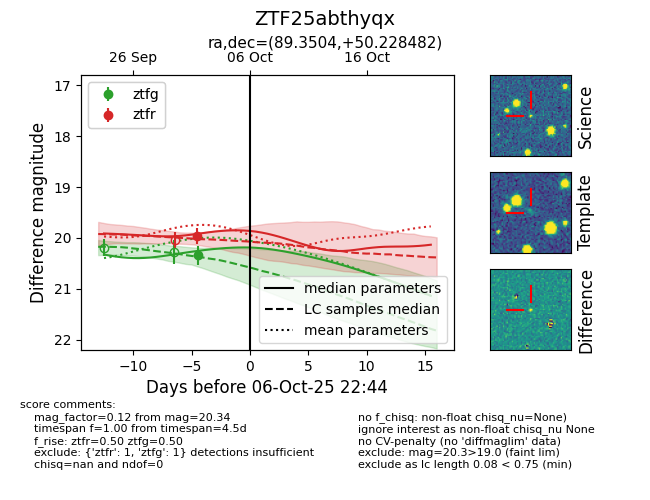
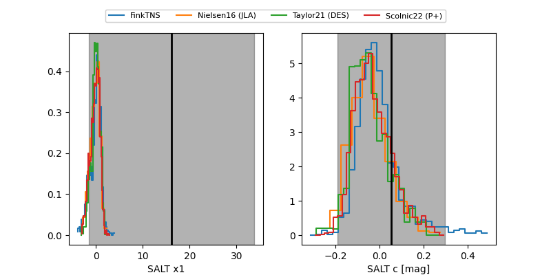

FINK: ZTF25abthyqx
Lasair: ZTF25abthyqx
ALeRCE: ZTF25abthyqx
ZTF25abthyqx (ztf,fink)
equatorial (ra, dec) = (89.3504,+50.22848)
galactic (l, b) = (162.5212,+12.56048)


last ztfg=20.34, ztfr=19.96
1 ztfg, 1 ztfr detections